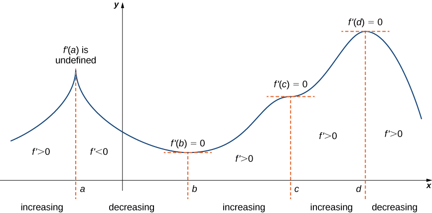

4.5 — Derivatives and the Shape of a Graph
First derivative test
Recall that the derivative is a rate of change.
If is a function, we know that is increasing when and is decreasing when .
Using the shape of a graph, we can visually deduce whether a function is increasing or decreasing.
| Increasing function | Decreasing function |
|---|---|
![7194f40901394c199b2db33a47f08846]() |
![221377c87abf4fff8fd21c50f96cd729]() |
Consider a continuous function with the graph below.

is undefined due to a sudden change in direction of .
And because there exists a horizontal tangent to the graph of at those points.
This means that , , , and are all critical points of the function .
As we can see from the graph above, a function can only change from increasing to decreasing (or vice-versa) at a critical point.
First derivative test
Let be a continuous function over an interval , and let be a critical point of on . Then, the following holds:
- is a local maximum if when and when .
- is a local minimum if when and when .
- is neither a local maximum nor a local minimum if has the same sign for and .
Using the first derivative test, we can “divide” the interval into separate chunks using our critical points. Then, figure out where our function is increasing and decreasing.
Consider the function .
Locate any local extrema and determine on which intervals this function is increasing or decreasing.
First, we need to find the critical points.
Using the first derivative test, we can work out where is increasing and decreasing, and the nature of our critical points.
To do that, we evaluate around the critical points to see how the sign changes around those points.
| increasing | ||
| critical point (local max) | ||
| decreasing | ||
| critical point (local min) | ||
| increasing |
From the table, we can see that value of goes from positive to negative around the critical point . This means that the local maximum of is at .
As for , we can see that the value of goes from negative before to positive after. This means that the local minimum of at .
Concavity
This is another layer to describe a function’s increase or decrease. Concavity describes the curve of a function.
Concave up: the function curves upward. Concave down: the function curves downward.
| Concave up | Concave down |
|---|---|
|
|
The concavity of the graph describes whether the rate of change is increasing or decreasing.
- An increasing function that is climbing faster and faster is concave up.
- A decreasing function that is climbing slower and slower is concave down.
Test for concavity
Let be a function that is differentiable function over an interval .
- If for all , then is concave up.
- If for all , then is concave down.
is the second derivative of the function . Meaning, you differentiate twice.
Inflection point
If is a continuous function and its concavity changes at , then is said to be an inflection point of .
![026224f51bf545f0b3953eacf189e100]() |
|---|
| Here, we can see that is increasing to the left of , then increases to the right of . We call the point the inflection point. |
Let .
Determine all intervals where is concave up and all intervals where is concave down.
First, find all of the inflection points of .
Then, find the values of where .
Again, we set up a table and evaluate around the inflection point.
| concave down | ||
| inflection point | ||
| concave up |
To the left of the inflection point, the value of is negative. This means that is concave down up to .
Conversely, the value of is positive to the right of the inflection point. This means that is concave up from .
Second derivative test
The first derivative test used, well, the first derivative to locate the local minima and local maxima. There is another test to locate these using the second derivative.
Second derivative test
Let be a function that is continuous over an interval containing where .
- If , then has a local minimum at .
- If , then has a local maximum at .
- If , then the test is inconclusive.
Consider the function . Find the critical points, then determine whether they are local minimum or local maximum of using the second derivative test.
First, find and the critical points:
Then, use the second derivative test to determine which critical point is the minimum/maximum.
As such, we have that the local minimum of is at and the local maximum of is at .